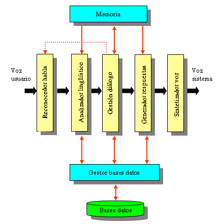

IA Conversacional

Piense en la última vez que recibió un servicio al cliente excelente. ¿Qué lo hizo especial? ¿Cuánto duró la interacción? Y una pregunta más: ¿quién le ayudó, una persona o una máquina?
Gracias a los rápidos avances en IA, su respuesta a la última pregunta podría ser cualquiera de las dos. Los ordenadores ahora cuentan con el don de la palabra gracias a la IA conversacional, y lo hacen cada día mejor.
La IA conversacional hace referencia a un conjunto de tecnologías que permiten que los dispositivos y aplicaciones, como los bots de chat, conversen con personas empleando sus lenguajes naturales.
La IA conversacional emplea el aprendizaje automático y el procesamiento del lenguaje natural para recopilar y analizar lenguajes, comprenderlos y luego generar respuestas similares a las humanas. Los bots de chat y los dispositivos que dependen de la IA conversacional se vuelven más inteligentes con el tiempo, al usar los datos y la información de las conversaciones para mejorar los resultados.
Además de conversar con las personas, las tecnologías controladas por IA también pueden realizar tareas al conectarse con servicios y sistemas internos y externos. En otras palabras, un bot de chat o dispositivo que usa IA conversacional no se limita a sus propios datos o conocimientos; puede buscar respuestas y soluciones conectándose a otros equipos.
Presentación del bot de chat conversacional

Un bot de chat conversacional es una aplicación que interactúa con humanos a través de una interfaz de usuario conversacional. Conocidos también como agentes virtuales, asistentes digitales personales o incluso bots de chat con IA, estos robots inteligentes se basan en la inteligencia artificial conversacional para ayudar a los usuarios a obtener respuestas o resolver desafíos.
Los bots de chat conversacionales ya se utilizan en una amplia variedad de sectores. Estas son algunas de las maneras en que las organizaciones los usan para ayudar a clientes, pacientes, estudiantes y empleados.
Los bot de charla o bot conversacional (en inglés: chatbot ), 1 son aplicaciones software que surgen en los años 60, y que simulan mantener una conversación con una persona al proveer respuestas automáticas, las cuales son previamente establecidas por un conjunto de expertos a entradas realizadas por el usuario. Estos bot, también conocidos como sistemas expertos, utilizan el razonamiento basado en casos (CBR: case base reasoning).2
Para establecer una conversación, han de utilizarse frases fácilmente comprensibles y que sean coherentes, aunque la mayoría de los bot conversacionales no consiguen comprender del todo. En su lugar, tienen en cuenta las palabras o frases del interlocutor, que les permitirán usar una serie de respuestas preparadas de antemano. Estos son capaces de reconocer la manera en la que una frase está formulada gracias a una serie de patrones comparativos preestablecidos, y de este modo, basándose en las diferentes variables de dicha frase, presentan una respuesta correspondiente.
El objetivo principal de los chatbots es mejorar la atención a los clientes (en el ámbito del marketing) , es decir, generar respuestas rápidas y concisas a cuestiones habituales de los usuarios. Además, de enviar información/novedad y publicidad de forma automática de la empresa. En el ámbito educativo su objetivo principal es mantener una comunicación fluida entre alumnado-familia- centro.4
En relación con el control de calidad existe la prueba de Turing para determinar el nivel de comprensión del bot. La prueba de Turing es el estándar de la industria que permite identificar si el bot tiene la capacidad para generar un comportamiento inteligente con el usuario. 5 Por lo tanto, el desarrollo de la prueba permite que la industria de los bot conversacionales sea de calidad y se enmarquen como asistentes inteligentes.
sistemas de diálogo

Algunos bots conversacionales son integrados en sistemas de diálogo como asistentes virtuales automatizados y compañías están usándolos en vez de call centers. Los bots pueden responder al usuario y asistirlo en múltiples actividades; entre ellas están aprender, buscar, recordar, conectar con otros sistemas o integrar servicios. Actualmente, los bots de charla pueden operar basados completamente en inteligencias artificiales pero hay un creciente interés en usar computación basada en humanos para proveer un servicio más eficiente.
Esta técnica, también conocida como computación con humanos en el bucle, o human-in-the-loop computing, puede llegar a convertirse en la forma más efectiva para entrenar los bots de charla y lograr que puedan comunicarse independientemente con el usuario. También hace más relevante su capacidad para beneficiarse de un continuo bucle de retroalimentación. Al tener una mayor cantidad de personas interactuando con ellos y enseñándoles como resolver problemas, su algoritmo de aprendizaje automático mejora. De esta manera asistentes personales que utilicen una combinación de inteligencia artificial y humanos tienen la capacidad de proveer una experiencia más productiva y agradable para el usuario.
Las mismas técnicas de interacción conversacional se pueden aplicar a los asistentes virtuales por voz, por ejemplo desde 2016 se puede pedir un Uber desde el dispositivo Google Home, que contiene la inteligencia artificial del asistente virtual Google Assistant, por voz, por medio de una conversación natural.18